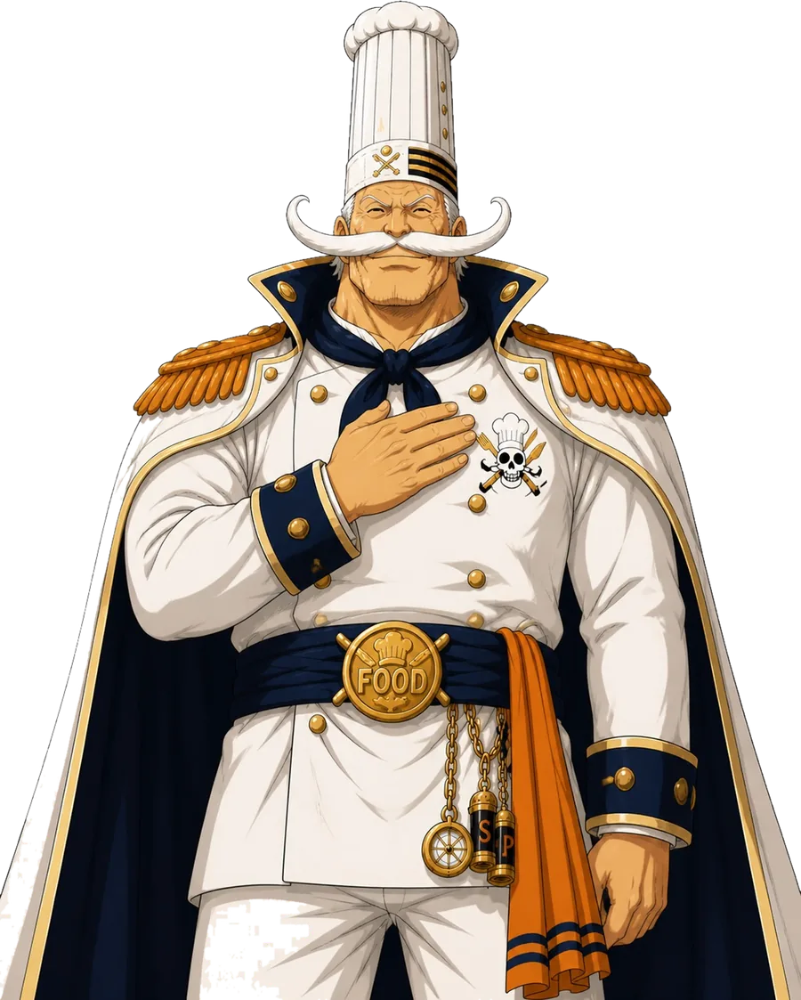

Le manifeste
Pourquoi j'ai lancé Captain.Food

Je vais être direct avec toi, parce que tu n'as pas le temps et moi non plus.
Captain.Food n'existe pas encore vraiment. Il n'y a pas de dizaines de restaurants à bord, pas de milliers de clients, pas de belle courbe à te montrer. Il y a une conviction, un cadre juridique, un site, et moi qui t'écris. Je préfère te le dire tout de suite : je crois que tu en as assez qu'on te raconte des histoires. Alors voici la vraie.
Ce qui m'a mis en colère
Mon combat est simple : je veux construire des plateformes d'utilité publique, pour tenir tête aux géants de la tech qui abusent de leur position.
J'ai passé des années à construire des plateformes et des marketplaces. Je sais comment elles sont faites — et je sais où elles serrent. L'ubérisation des livreurs m'a semblé le bon point de départ : des gens qui triment, mal payés, sans protection.
Puis j'ai découvert les chiffres, côté restaurateurs. Des commissions de 25 à 35 % sur chaque commande — ça m'a choqué. Et ce qui m'a choqué encore plus, c'est la perte de contrôle : le restaurateur ne connaît même plus ses propres clients.
Le calcul est simple. Sur les grandes plateformes, un plat à 30 € ne te rapporte pas 30 €. Il t'en rapporte à peu près 21. Les 9 € qui manquent partent en commission, sur un métier où la marge se joue déjà à quelques points. Tu cuisines. Elles encaissent.
À force de regarder, je n'ai vu qu'une chose : un système où les clients, les restaurateurs et les livreurs survivent et s'en plaignent — tous, sauf les grandes plateformes. Alors j'ai décidé d'utiliser ce que je sais faire, construire du logiciel de qualité et vite, pour régler un problème de société avant de chercher le profit.
Le vrai problème n'est pas le prix. C'est la dépendance.
On croit que le problème des plateformes, c'est la commission. Ce n'est qu'une partie. Le vrai problème, c'est que tes clients ne sont pas tes clients. La plateforme connaît leur nom, leur adresse, leurs habitudes. Toi, non. Le jour où tu pars, tu repars de zéro.
Et une fois que tu dépends d'elles, elles peuvent serrer la vis. La commission monte ? Tu l'apprends. Ton classement baisse ? Tu ne sais pas pourquoi. Les règles changent ? Tu suis. Tu n'es plus capitaine de ton affaire. Tu es passager.
Ce que je refuse de faire
La tentation, quand on lance une alternative, c'est de faire pareil en plus gentil au début — puis de presser une fois que tout le monde est accroché. On a tous vu le film. Le gentil service devient le nouveau péage.
Je refuse ça. Pas par gentillesse : par construction. Captain.Food vise l'agrément d'entreprise solidaire d'utilité sociale (ESUS). Ce n'est pas un slogan : c'est un cadre juridique qui encadrerait notre lucrativité et notre raison d'être. Et notre cap, c'est de devenir une coopérative (SCIC) — où les restaurateurs, les livreurs et les citoyens auront voix au chapitre. Le jour où on voudrait dériver vers ce qu'on combat, le statut nous en empêchera. C'est le seul garde-fou qui vaille : pas une promesse morale, une règle.
Et pour que ce ne soit pas qu'une parole de plus, on ouvre nos comptes en public sur Open Collective : chaque euro reçu, chaque euro dépensé, destiné à être visible par tous. La règle nous engage ; les comptes te le prouvent.
Et je veux aller plus loin encore : que Captain.Food soit un bien commun, pas ma propriété. Mon cap, c'est d'ouvrir le code et de le faire reconnaître comme bien public numérique (digital public good) — pour qu'il soit vérifiable, et qu'une autre ville, une autre bande d'indépendants, puisse le reprendre et l'adapter. C'est comme ça qu'on tient tête aux géants : pas en devenant un petit géant à notre tour, mais en faisant de l'outil un commun que personne ne peut confisquer.
Ce qu'on te propose, en clair
0 % de commission sur tes plats. Toujours. Tu gardes 100 % du prix de ce que tu vends. Tes prix, les mêmes qu'en salle — pas de double carte. Ta clientèle, à toi, dès la première commande directe. Ton canal, sous ton nom.
Et surtout, tu as enfin un vrai chez-toi en ligne. Pas une fiche noyée dans
l'annuaire d'un géant, un resto parmi des milliers : ton propre site,
à ton nom — tonresto.captain.food, ou même ton propre
nom de domaine tonresto.fr si tu le veux. Tes couleurs, tes
photos, ton univers. Un site qui te référence, que tes clients retiennent, et
qui t'appartient. C'est ça, sortir de la dépendance : ne plus louer une place
sur la vitrine d'un autre, mais avoir la tienne.
« Alors vous vivez de quoi ? » Bonne question, et la réponse est ici, en clair : jamais sur ton dos. Le service est financé par une contribution libre du client — 0 € possible, sans jugement — jamais un pourcentage, jamais sur ta marge, jamais une surcharge ajoutée au client.
Et les livreurs : là où l'ubérisation les presse et les précarise, on a choisi de les payer mieux que quiconque, ici à Tours — avec l'ambition, à terme, de les salarier. Un service juste commence par des gens correctement traités, et on le finance sans presser personne (voir comment on paie la livraison).
Où on en est, honnêtement
On démarre. À Tours, avec un premier groupe de restaurateurs. Pas partout, pas tout de suite : un territoire, bien fait, entre indépendants qui se connaissent. On construit l'outil avec les premiers qui embarquent — leurs retours le façonnent. Rejoindre maintenant, ce n'est pas prendre un risque : c'est gratuit, sans exclusivité, sans engagement. C'est peser sur ce que Captain.Food deviendra.
Reprenons les commandes.
Captain.Food
Tu tiens un restaurant ou un food truck à Tours ? Écris-moi directement : miam@captain.food — ou rejoins les restaurateurs libres. On en parle, sans engagement.